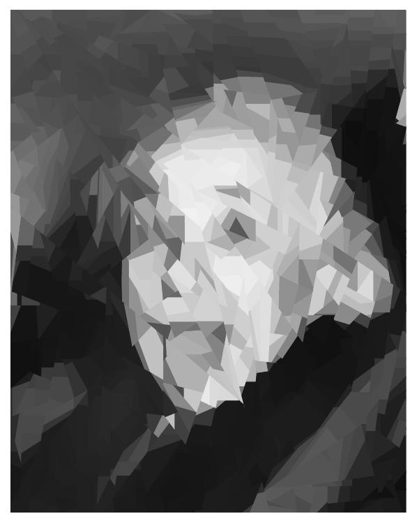
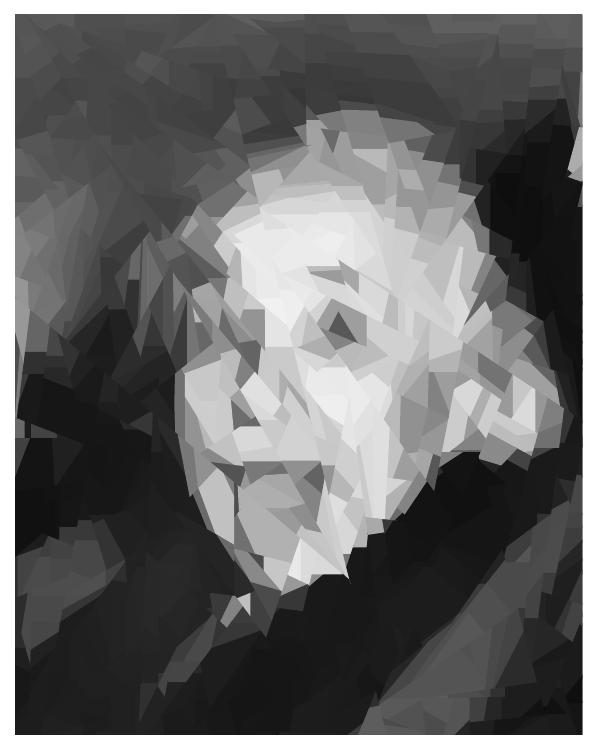
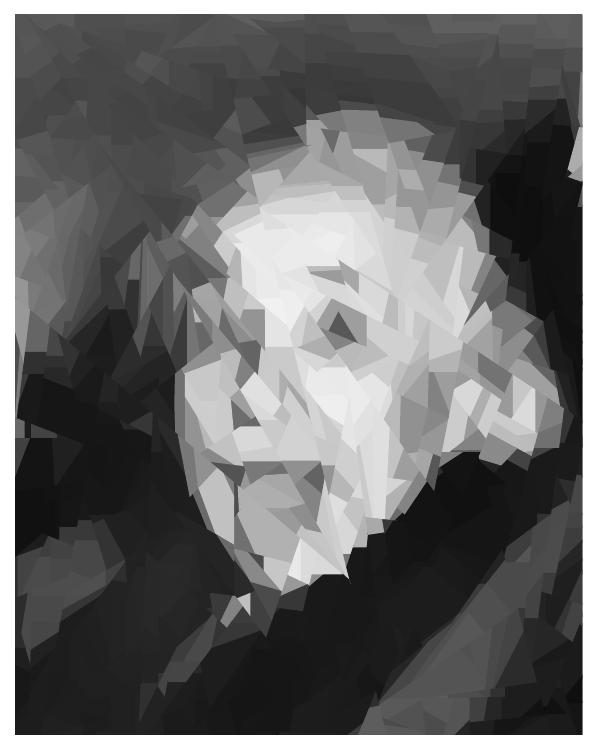
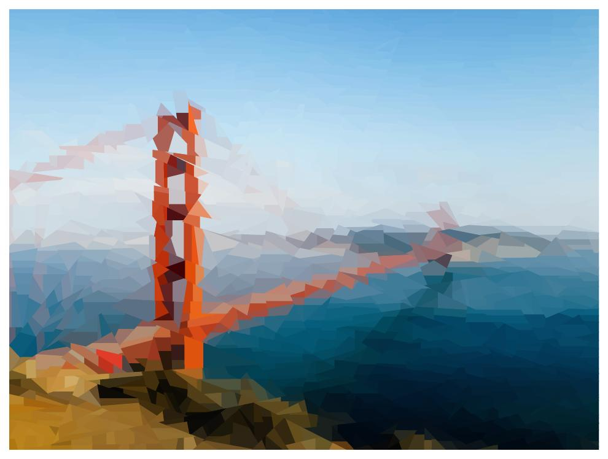

In summer 2024, I spent an internship in the Machine Learning research group of Prof. Miguel Á. Carreira-Perpiñán at the University of California, Merced. Prof. Carreira-Perpiñán has developed an algorithm, Tree Alternating Optimization (TAO), to learn decision trees from data. The goal of my project was to use TAO to manipulate images for artistic purposes, specifically to restyle an input image so it looks like a cubist painting. The result of my work appeared in the following paper:
You can see lots of examples (images and videos) in the cubist TAO art gallery. In this web page, I give an overview of the project. For more details, see the above paper.
A machine learning regression model is a parametric mathematical function f trained on a dataset of inputs x and corresponding outputs y so that the function maps inputs to outputs as best as possible: y ≈ f(x). In our case, the inputs are the pixel locations of the image, the outputs are the pixel colors, and the function is an oblique decision tree. An oblique decision tree partitions the image hierarchically into polygonal regions and assigns a contant color to each region. Such a tree can be learned from the image using the TAO algorithm. Instead of a single tree, we can use several trees (a decision forest) to create an even finer partition. The resulting, new image predicted by the tree or forest is made up of polygons each with a different color, and the polygons and their color are optimized to match the original image. The process is described in this figure:

We can control the appearance of the result by changing the depth of the tree Δ (a tree of depth Δ creates 2Δ regions), the number of trees T, the random seed of TAO (which creates a different result each time) and the number of training iterations of TAO (usually 5 to 10 are enough).
Here is an example:

Here is another one:
|

|

|
There a lots more in the cubist TAO art gallery. Zoom into the images to see individual polygons.
Last modified: Sat Oct 5 21:34:04 PDT 2024